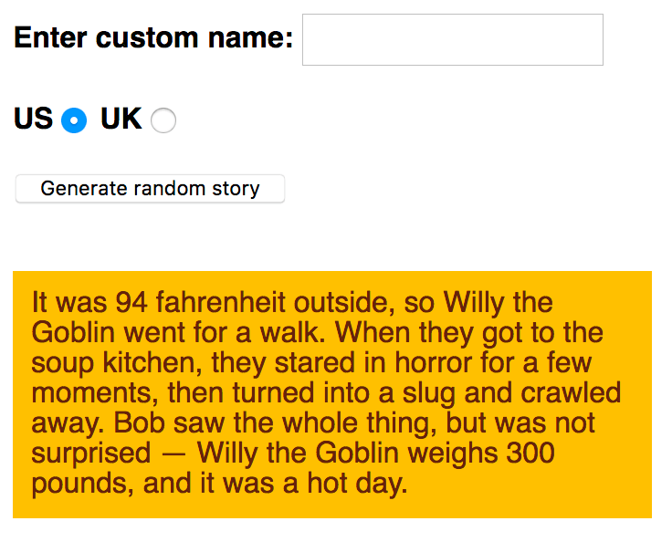

In this assessment you'll be tasked with taking some of the knowledge you've picked up in this module's articles and applying it to creating a fun app that generates random silly stories. Have fun!
| Prerequisites: | Before attempting this assessment you should have already worked through all the articles in this module. |
|---|---|
| Objective: | To test comprehension of JavaScript fundamentals, such as variables, numbers, operators, strings, and arrays. |
To get this assessment started, you should:
index.html in a new directory somewhere on your computer, and do the assessment locally to begin with. This also has the CSS to style the example contained within it.Alternatively, you could use a site like JSBin or Glitch to do your assessment. You could paste the HTML, CSS and JavaScript into one of these online editors. If the online editor you are using doesn't have a separate JavaScript panel, feel free to put it inline in a <script> element inside the HTML page.
Note: If you get stuck, then ask us for help — see the {{anch("Assessment or further help")}} section at the bottom of this page.
You have been provided with some raw HTML/CSS and a few text strings and JavaScript functions; you need to write the necessary JavaScript to turn this into a working program, which does the following:
The following screenshot shows an example of what the finished program should output:

To give you more of an idea, have a look at the finished example (no peeking at the source code!)
The following sections describe what you need to do.
Basic setup:
main.js, in the same directory as your index.html file.main.js. Put it just before the closing </body> tag.Initial variables and functions:
main.js file. This gives you three variables that store references to the "Enter custom name" text field (customName), the "Generate random story" button (randomize), and the {{htmlelement("p")}} element at the bottom of the HTML body that the story will be copied into (story), respectively. In addition you've got a function called randomValueFromArray() that takes an array, and returns one of the items stored inside the array at random.main.js:
storyText.insertX.insertY.insertZ.Placing the event handler and incomplete function:
main.js file. This:
randomize variable so that when the button it represents is clicked, the result() function is run.result() function definition to your code. For the remainder of the assessment, you'll be filling in lines inside this function to complete it and make it work properly.Completing the result() function:
newStory, and set its value to equal storyText. This is needed so we can create a new random story each time the button is pressed and the function is run. If we made changes directly to storyText, we'd only be able to generate a new story once.xItem, yItem, and zItem, and make them equal to the result of calling randomValueFromArray() on your three arrays (the result in each case will be a random item out of each array it is called on). For example you can call the function and get it to return one random string out of insertX by writing randomValueFromArray(insertX).newStory string — :insertx:, :inserty:, and :insertz: — with the strings stored in xItem, yItem, and zItem. There is a particular string method that will help you here — in each case, make the call to the method equal to newStory, so each time it is called, newStory is made equal to itself, but with substitutions made. So each time the button is pressed, these placeholders are each replaced with a random silly string. As a further hint, the method in question only replaces the first instance of the substring it finds, so you might need to make one of the calls twice.if block, add another string replacement method call to replace the name 'Bob' found in the newStory string with the name variable. In this block we are saying "If a value has been entered into the customName text input, replace Bob in the story with that custom name."if block, we are checking to see if the uk radio button has been selected. If so, we want to convert the weight and temperature values in the story from pounds and Fahrenheit into stones and centigrade. What you need to do is as follows:
weight variable, replace 300 with a calculation that converts 300 pounds into stones. Concatenate ' stone' onto the end of the result of the overall Math.round() call.temperature variable, replace 94 with a calculation that converts 94 Fahrenheit into centigrade. Concatenate ' centigrade' onto the end of the result of the overall Math.round() call.temperature variable, and '300 pounds' with the contents of the weight variable.textContent property of the story variable (which references the paragraph) equal to newStory.document.querySelector('html').style.backgroundColor = 'red';
Math.round() is a built-in JavaScript method that rounds the result of a calculation to the nearest whole number.replace() method multiple times, or you can use regular expressions. For instance, let text = 'I am the biggest lover, I love my love'; text.replace(/love/g,'like'); will replace all instances of 'love' to 'like'. Remember, Strings are immutable!If you would like your work assessed, or are stuck and want to ask for help:
{{PreviousMenu("Learn/JavaScript/First_steps/Arrays", "Learn/JavaScript/First_steps")}}